Недавно вышел новый релиз Zabbix 2.2, в котором, по словам разработчиков, была существенна увеличена производительность, в 2-5 раз. Достигнуто это было, видимо, за счёт удаления столбцов lastvalue и prevvalue из таблицы items.
Кроме того, в настройках сервера теперь нельзя выключить Housekeeper - процессы Zabbix, удаляющие из базы данных устаревшие значения. Теперь эта настройка перенесена в веб-интерфейс, где можно выключить Housekeeper лишь для определённых видов данных, а не целиком. Это полезно, если настроено секционирование лишь части таблиц. При этом часть таблиц по-прежнему будут очищаться Housekeeper'ом, а часть будет очищаться настроенной в планировщике задач MySQL хранимой процедурой, которая будет удалять устаревшие секции таблиц.
Долгожданной возможностью стал просмотр исторических данных для узлов, снятых с наблюдения. Ранее, чтобы посмотреть историю наблюдений, приходилось временно включать наблюдение за узлом. Если узел был демонтирован, это могло привести к заведомо ложной сработке триггеров.
Другим важным для меня изменением стало изменение настроек опроса по SNMP. Раньше использовались настройки опроса по умолчанию, из библиотеки SNMP. По умолчанию таймаут опроса составлял 1 секунду, а в случае неудачи делалось до 5 дополнительных попыток опроса. В Zabbix 2.2 для опроса по SNMP используется значение настройки Timeout, заданное в файле конфигурации и делается только одна попытка опроса.
Это может стать большой проблемой, если используются скрипты внешнего опроса, время работы которых составляет десятки секунд. Чтобы скрипты работали, приходится устанавливать большое значение таймаута, но это же значение таймаута будет использоваться и в опросе SNMP. В результате либо не работают скрипты внешнего опроса, либо сервер не справляется с темпом опроса оборудования по SNMP, ожидая ответа от выключенного оборудования десятки секунд.
В случае небольшой инсталляции может помочь увеличение количества процессов для опроса - процессов Poller. В случае большой инсталляции количество процессов придётся увеличить настолько, что может потребоваться слишком много оперативной памяти, которая используется процессами Poller и потоками MySQL, обслуживающими подключение к базе данных от каждого Poller'а.
Кардинальное решение заключается в том, чтобы исправить исходные тексты Zabbix, благо это оказалось совсем не сложно.
Добавим официальные репозитории с файлами для сборки пакетов в файл /etc/apt/sources.list:
deb-src http://repo.zabbix.com/zabbix/2.2/debian wheezy main
Установим ключ репозитория Zabbix и обновим список доступных пакетов:
# wget http://repo.zabbix.com/zabbix-official-repo.key -O - | apt-key add - # apt-get update
Установим необходимые для сборки пакетов Zabbix зависимости и скачаем файлы для сборки пакетов:
# apt-get build-dep zabbix # apt-get source zabbix
Ставим дополнительную сборочную зависимость, которую разработчики забыли прописать в файлы для сборки пакетов и пакет devscripts, из которого нам пригодится утилита dch:
# apt-get install unixodbc-dev
Переходим в каталоги zabbix-2.2.0, скачиваем и накладываем заплатку:
# cd zabbix-2.2.0 # wget http://stupin.su/blog/zabbix220/zabbix220_snmp_timeout_retries.patch # patch -Np0 < zabbix220_snmp_timeout_retries.patch
Текст самой заплатки:
diff -Naur src/zabbix_proxy/proxy.c new/zabbix_proxy/proxy.c
--- src/zabbix_proxy/proxy.c 2013-11-12 13:16:44.000000000 +0600
+++ new/zabbix_proxy/proxy.c 2013-12-07 13:29:39.283703310 +0600
@@ -42,6 +42,7 @@
#include "housekeeper/housekeeper.h"
#include "../zabbix_server/pinger/pinger.h"
#include "../zabbix_server/poller/poller.h"
+#include "../zabbix_server/poller/checks_snmp.h"
#include "../zabbix_server/poller/checks_ipmi.h"
#include "../zabbix_server/trapper/trapper.h"
#include "../zabbix_server/snmptrapper/snmptrapper.h"
@@ -407,6 +408,10 @@
#endif
{"Timeout", &CONFIG_TIMEOUT, TYPE_INT,
PARM_OPT, 1, 30},
+ {"SNMPTimeout", &CONFIG_SNMP_TIMEOUT, TYPE_INT,
+ PARM_OPT, 1, 30},
+ {"SNMPRetries", &CONFIG_SNMP_RETRIES, TYPE_INT,
+ PARM_OPT, 1, 10},
{"TrapperTimeout", &CONFIG_TRAPPER_TIMEOUT, TYPE_INT,
PARM_OPT, 1, 300},
{"UnreachablePeriod", &CONFIG_UNREACHABLE_PERIOD, TYPE_INT,
diff -Naur src/zabbix_server/poller/checks_snmp.c new/zabbix_server/poller/checks_snmp.c
--- src/zabbix_server/poller/checks_snmp.c 2013-11-12 13:16:49.000000000 +0600
+++ new/zabbix_server/poller/checks_snmp.c 2013-12-07 12:50:31.062073112 +0600
@@ -33,6 +33,9 @@
}
zbx_snmp_index_t;
+int CONFIG_SNMP_TIMEOUT;
+int CONFIG_SNMP_RETRIES;
+
static zbx_snmp_index_t *snmpidx = NULL;
static int snmpidx_count = 0, snmpidx_alloc = 16;
@@ -268,10 +271,10 @@
break;
}
- session.retries = 0; /* number of retries after failed attempt */
- /* (net-snmp default = 5) */
- session.timeout = CONFIG_TIMEOUT * 1000 * 1000; /* timeout of one attempt in microseconds */
- /* (net-snmp default = 1 second) */
+ session.retries = CONFIG_SNMP_RETRIES - 1; /* number of retries after failed attempt */
+ /* (net-snmp default = 5) */
+ session.timeout = CONFIG_SNMP_TIMEOUT * 1000 * 1000; /* timeout of one attempt in microseconds */
+ /* (net-snmp default = 1 second) */
#ifdef HAVE_IPV6
if (SUCCEED != get_address_family(item->interface.addr, &family, err, MAX_STRING_LEN))
diff -Naur src/zabbix_server/poller/checks_snmp.h new/zabbix_server/poller/checks_snmp.h
--- src/zabbix_server/poller/checks_snmp.h 2013-11-12 13:16:48.000000000 +0600
+++ new/zabbix_server/poller/checks_snmp.h 2013-12-07 12:50:31.062073112 +0600
@@ -26,7 +26,8 @@
#include "sysinfo.h"
extern char *CONFIG_SOURCE_IP;
-extern int CONFIG_TIMEOUT;
+extern int CONFIG_SNMP_TIMEOUT;
+extern int CONFIG_SNMP_RETRIES;
int get_value_snmp(DC_ITEM *item, AGENT_RESULT *value);
diff -Naur src/zabbix_server/server.c new/zabbix_server/server.c
--- src/zabbix_server/server.c 2013-11-12 13:17:04.000000000 +0600
+++ new/zabbix_server/server.c 2013-12-07 13:29:22.605760996 +0600
@@ -43,6 +43,7 @@
#include "housekeeper/housekeeper.h"
#include "pinger/pinger.h"
#include "poller/poller.h"
+#include "poller/checks_snmp.h"
#include "poller/checks_ipmi.h"
#include "timer/timer.h"
#include "trapper/trapper.h"
@@ -360,6 +361,10 @@
#endif
{"Timeout", &CONFIG_TIMEOUT, TYPE_INT,
PARM_OPT, 1, 30},
+ {"SNMPTimeout", &CONFIG_SNMP_TIMEOUT, TYPE_INT,
+ PARM_OPT, 1, 30},
+ {"SNMPRetries", &CONFIG_SNMP_RETRIES, TYPE_INT,
+ PARM_OPT, 1, 10},
{"TrapperTimeout", &CONFIG_TRAPPER_TIMEOUT, TYPE_INT,
PARM_OPT, 1, 300},
{"UnreachablePeriod", &CONFIG_UNREACHABLE_PERIOD, TYPE_INT,
Если всё прошло успешно, то можно внести комментарии к изменениям. Запускаем команду для редактирования журнала изменений:
# dch -i
И приводим последнюю запись к подобному виду:
zabbix (1:2.2.0-2+stupin) UNRELEASED; urgency=low
* Non-maintainer upload.
* Added parameters SNMPTimeout and SNMPRetries to config of Zabbix-server
and Zabbix-proxy
-- Vladimir Stupin <vladimir@stupin.su> Sat, 07 Dec 2013 13:08:13 +0600
Теперь можно собрать deb-пакеты:
# dpkg-buildpackage -us -uc -b -rfakeroot
В каталоге выше появятся собранные пакеты, которые можно установить при помощи dpkg.
Установим необходимые для работы Zabbix пакеты:
# apt-get install lighttpd php5-cgi snmp-mibs-downloader mysql-server mysql-client
После этого можно установить сам сервер Zabbix, веб-интерфейс, агент и утилиты. Если вы собирали пакеты самостоятельно, можете воспользоваться dpkg. Можно также воспользоваться моим репозиторием, в который я выложил собранные пакеты. Для этого нужно вписать в файл /etc/apt/sources.list строку:
deb http://deb.stupin.su/ wheezy main
И обновить список пакетов:
# apt-get update
Ставим Zabbix из пакетов:
# dpkg -i zabbix-server-mysql_2.2.0-2+stupin_amd64.deb zabbix-agent_2.2.0-2+stupin_amd64.deb zabbix-frontend-php_2.2.0-2+stupin_all.deb zabbix-get_2.2.0-2+stupin_amd64.deb zabbix-sender_2.2.0-2+stupin_amd64.deb
Или из репозитория:
# apt-get install zabbix-server-mysql zabbix-agent zabbix-frontend-php zabbix-get zabbix-sender
Zabbix-агент позволит наблюдать за самим компьютером, на котором мы устанавливаем Zabbix.
Утилита zabbix-get может пригодиться для отладки пользовательских параметров Zabbix-агента: скриптов, которые вызываются Zabbix-агентом при запросе этого параметра. Скрипт должен выводить результат на стандартный вывод, а Zabbix-агент вернёт выведенное значение Zabbix-серверу или утилите zabbix-get.
Утилита zabbix-sender может пригодиться для скриптов, запускаемых из планировщика задач. Эти скрипты могут отправлять результаты измерений на Zabbix-сервер при помощи утилиты zabbix-sender.
В процессе установки Zabbix-сервера будет выведено предложение настроить базу данных. Если вы ставите Zabbix в первый раз, то можно согласиться с предложением и настроить новую базу. Если же у вас имеется база данных, стоит ответить на предложение отрицательно и настроить подключение к базе данных вручную, в файле /etc/zabbix/zabbix_server.conf. Диалог настройки выглядит следующим образом:
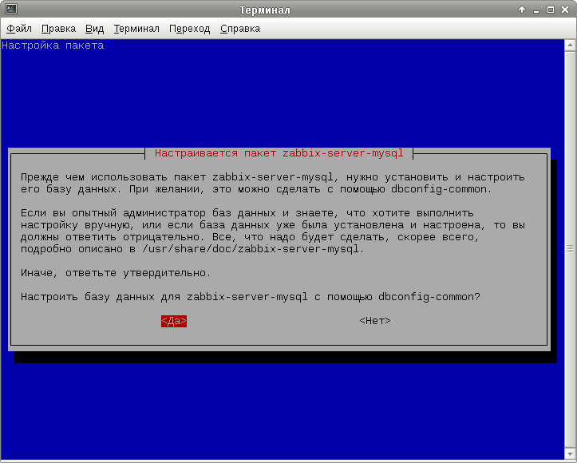 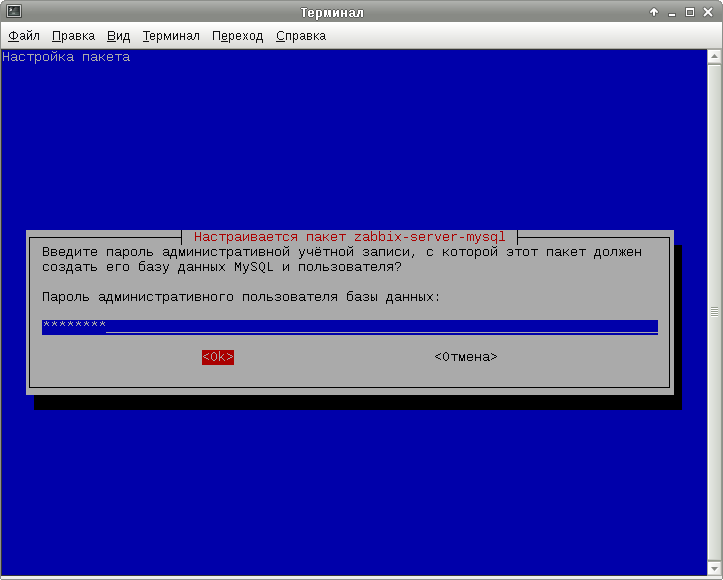 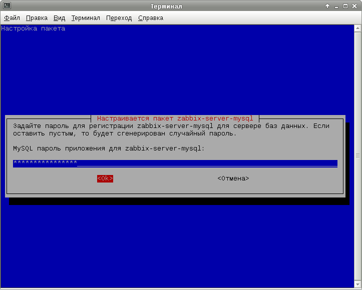 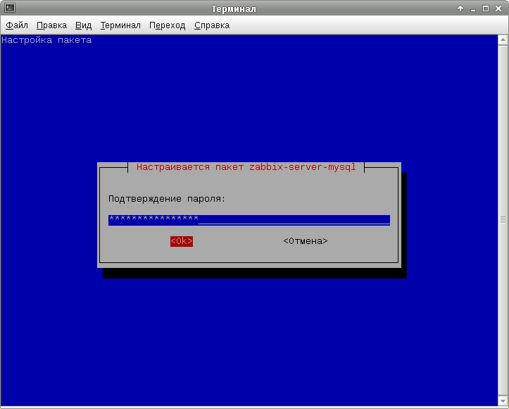Можно те же самые действия проделать и вручную. Подключаемся консольным клиентом к СУБД и создаём базу данных для Zabbix:
$ mysql -uroot -p > CREATE DATABASE zabbix DEFAULT CHARACTER SET UTF8 COLLATE UTF8_GENERAL_CI;
Создаём пользователя, от имени которого Zabbix будет подключаться к MySQL:
> INSERT INTO user(host, user, password) VALUES('localhost', 'zabbix', PASSWORD('zabbix_password'));
> FLUSH PRIVILEGES;
Даём пользователю zabbix полный доступ к базе данных zabbix:
> GRANT ALL ON zabbix.* TO 'zabbix'@'localhost'; > FLUSH PRIVILEGES;
Подключаемся к свежесозданной БД, создаём структуру БД и наполняем её данными:
> USE zabbix; > SOURCE /usr/share/zabbix-server-mysq/schema.sql > SOURCE /usr/share/zabbix-server-mysq/data.sql > SOURCE /usr/share/zabbix-server-mysq/images.sql
Задаём пароль администратора системы мониторинга и выходим из MySQL:
> UPDATE users SET passwd=MD5('zabbix_admin_password') WHERE alias='admin';
> QUIT
Удобно при опросе оборудования по SNMP в качестве OID'ов указывать не их числовое значение, а текстовое представление, взятое из соответствующего MIB-файла. Никто не запрещает использовать и другие MIB-файлы, но обычно мне бывает достаточно одного лишь IF-MIB'а. Файл IF-MIB скачивается в процессе установки пакета snmp-mibs-downloader, осталось лишь прописать его использование в файл конфигурации /etc/snmp/snmp.conf, вписав в него следующую строчку:
mibs +IF-MIB
Настроим Zabbix-сервер, чтобы он мог подключаться к БД. Если вы воспользовались средствами автоматической настройки базы данных, этот шаг можно пропустить.
Отредактируем файл конфигурации /etc/zabbix/zabbix_server.conf, установив значения соответствующих опций. В случае если Zabbix-сервер и сервер MySQL находятся на одном компьютере, желательно использовать Unix-сокет:
DBHost=localhost DBSocket=/var/run/mysqld/mysqld.sock DBName=zabbix DBUser=zabbix DBPassword=zabbix_password
Другие полезные настройки, на которые следует обратить внимание:
ListenIP=127.0.0.1 StartPollers=5 StartPollersUnreachable=1 StartPingers=1 Timeout=3 SNMPTimeout=1 SNMPRetries=3
Назначение настроек:
По мере роста количества наблюдаемых узлов и элементов данных может потребоваться увеличивать размеры кэшей и выставить в /etc/sysctl.conf настройку, ограничивающую максимальной размер одного сегмента разделяемой памяти, увеличивая её по мере необходимости:
kernel.shmmax = 268435456
Изменить эту настройку в процессе работы системы можно запустив команду вида:
# sysctl kernel.shmmax=268435456
Настроим Lighttpd для обслуживания веб-интерфейса Zabbix. Для этого создадим файл /etc/lighttpd/conf-available/20-zabbix.conf со следующим содержимым:
alias.url += (
"/zabbix/" => "/usr/share/zabbix/"
)
$HTTP["url"] =~ "^/zabbix/conf/" {
url.access-deny = ("")
}
$HTTP["url"] =~ "^/zabbix/api/" {
url.access-deny = ("")
}
$HTTP["url"] =~ "^/zabbix/include/" {
url.access-deny = ("")
}
$HTTP["url"] =~ "^/zabbix/include/classes/" {
url.access-deny = ("")
}
Если хочется, чтобы веб-интерфейс Zabbix был доступен по адресу с собственным доменным именем, этот файл может выглядеть следующим образом:
$HTTP["host"] == "zabbix.domain.tld" {
alias.url += (
"/" => "/usr/share/zabbix/"
)
$HTTP["url"] =~ "^/conf/" {
url.access-deny = ("")
}
$HTTP["url"] =~ "^/api/" {
url.access-deny = ("")
}
$HTTP["url"] =~ "^/include/" {
url.access-deny = ("")
}
$HTTP["url"] =~ "^/include/classes/" {
url.access-deny = ("")
}
}
Затем откорректируем настройки PHP, так чтобы он удовлетворял требованиям веб-интерфейса Zabbix. Для этого создадим файл /etc/php5/mods-available/zabbix.ini и пропишем в него следующие настройки:
max_execution_time=300 memory_limit=128M post_max_size=16M upload_max_filesize=2M max_input_time=300 date.timezone=Asia/Yekaterinburg
Включим использование этого файла при обработке CGI-сценариев PHP:
# cd /etc/php5/cgi/ # ln -s ../mods-available/zabbix.ini conf.d/30-zabbix.ini
Осталось включить поддержку PHP в режиме FastCGI в веб-сервере, а также включить веб-интерфейс Zabbix и попросить веб-сервер применить новые настройки:
# lighty-enable-mod fastcgi-php # lighty-enable-mod zabbix # /etc/init.d/lighttpd force-reload
Зайдём в веб-интерфейс Zabbix и проследуем по страницам мастера настроки веб-интерфейса:
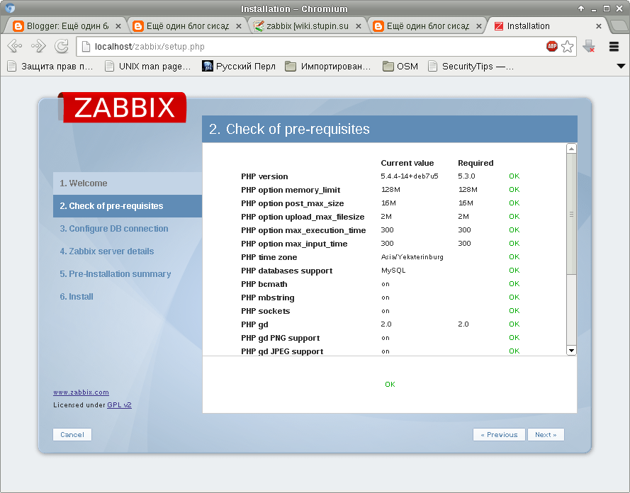 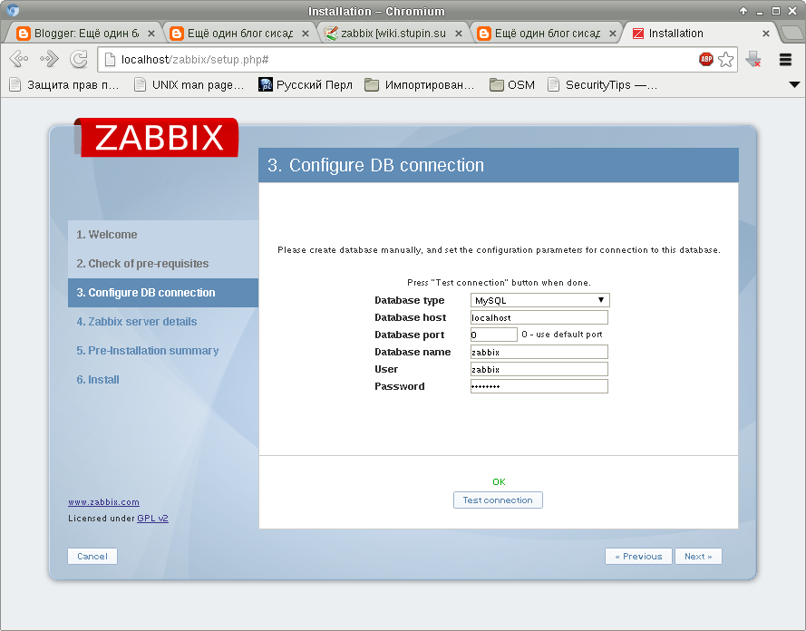 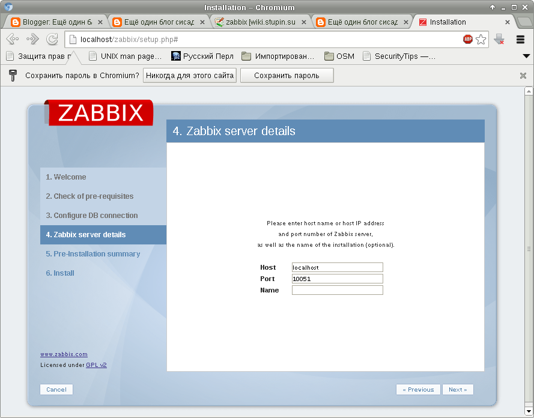 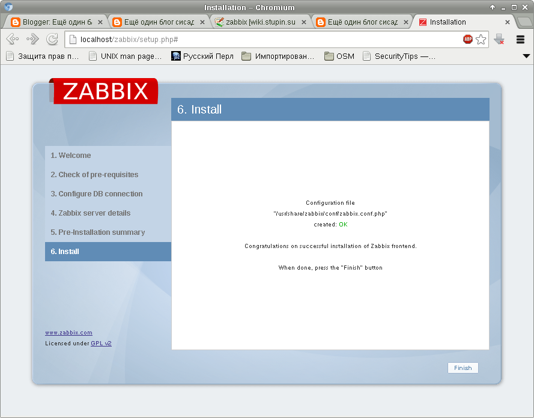
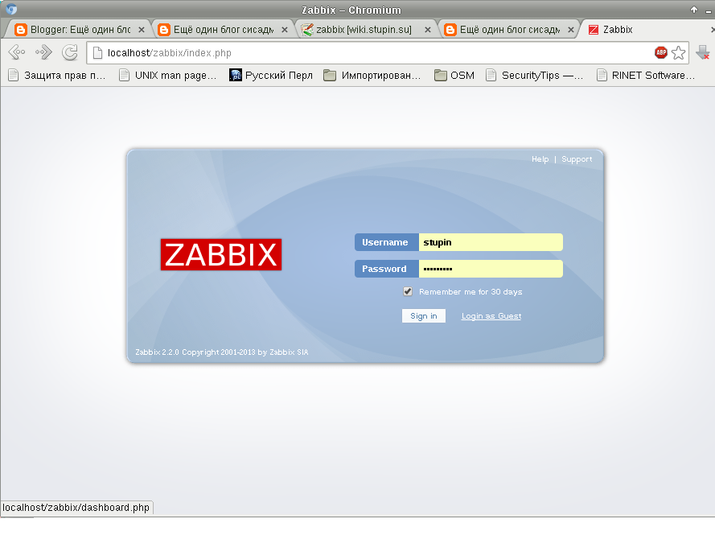
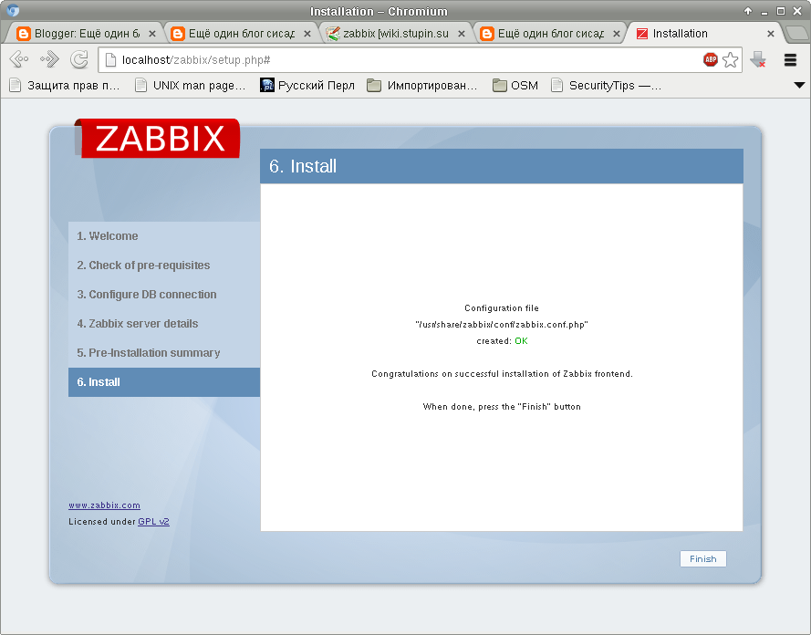
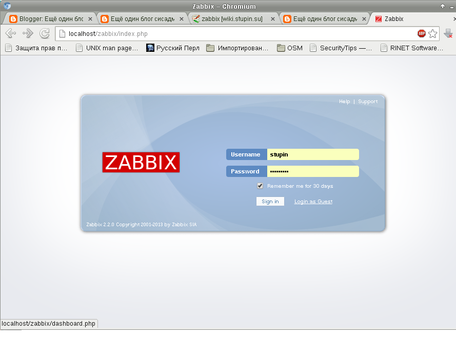
Вместо использования мастера можно просто создать вручную файл conf/zabbix.conf.php со следующим содержанием:
<?php // Zabbix GUI configuration file global $DB; $DB['TYPE'] = 'MYSQL'; $DB['SERVER'] = 'localhost'; $DB['PORT'] = '0'; $DB['DATABASE'] = 'zabbix'; $DB['USER'] = 'zabbix'; $DB['PASSWORD'] = 'zabbix_db_password'; // SCHEMA is relevant only for IBM_DB2 database $DB['SCHEMA'] = ''; $ZBX_SERVER = 'localhost'; $ZBX_SERVER_PORT = '10051'; $ZBX_SERVER_NAME = ''; $IMAGE_FORMAT_DEFAULT = IMAGE_FORMAT_PNG; ?>
Настраивать точное время полезно всегда. В случае системы мониторинга это особенно полезно, поскольку происходящие в системе события и исторические данные имеют привязку ко времени. Для синхронизации системного времени я использую демон OpenNTPd, разработанный в рамках проекта OpenBSD. Он не перегружен функционалом и легко настраивается. Установим пакет openntpd:
# apt-get install openntpd
И пропишем в файл конфигурации /etc/openntpd/ntpd.conf опцию servers, которая использует в качестве серверов все IP-адреса, возвращаемые по доменному имени:
servers ntp.ufanet.ru
Для отправки уведомлений системы мониторинга на почту можно воспользоваться Postfix, настроив его в режиме простейшего почтового релея. Для этого можно воспользоваться одной из моих прошлых заметок: Простейший почтовый релей на основе Postfix
Здесь рассмотрена лишь установка системы мониторинга. Её настройка - отдельная большая тема. Чтобы получить начальное представление об устройстве системы, рекомендую обратиться к статье: FreeBSD: Установка и начальная настройка системы мониторинга Zabbix. Более подробное описание можно найти на официальной вики-странице проекта: Руководство по Zabbix 2.2.
В патче были две грубейшие ошибки в настройках таймаутов и количества повторов SNMP, которые долгое время оставались незамеченными. Исправил патч.